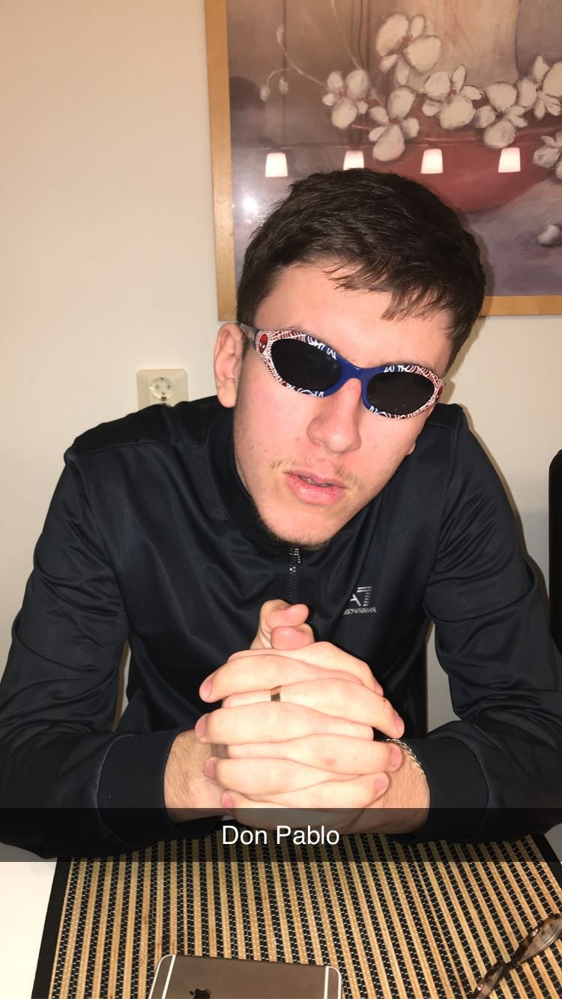

Bakgrund
Kemal är född och har spenderat majoriteten av sitt liv i Växjö. Hans stora passion i livet är motorfordon och pengar. Kemal brukar spendera större delar av sina dagar genom att tänka på hur han kan tjäna mer och mer pengar, han är en rätt så schysst typ som lever sitt liv i stunden helt enkelt.
Hemsidan
Kemal startade den här hemsidan efter att han en dag fick en uppenbarelse om att göra en hemsida om sporter. Han har inte riktigt ett synligt intresse för webbutveckling eller sporter men men... vi alla har ju våra dagar där vi bara bestämmer oss för att göra en hemsida om sporter helt plötsligt.

Kemal "Juggo" Cikota